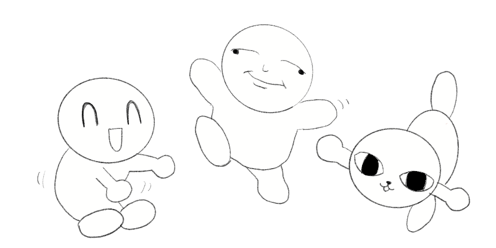

ぷりもんの懐古日誌へようこそ
このサイトでは、昔見たバラエティー番組やアニメ、 思い出に残っている出来事などを振り返って紹介しています。 懐かしい気持ちを大切にしながら、 ゆったり更新していくブログ風サイトです。
✨ 更新情報
2026年7月15日： 「懐かしのコンテンツ記録」の内容を更新しました！
懐かしいものたち
2000年代生まれの私が懐かしいと思うものを、 思い出とともに簡単に紹介しています。
- たまごっち
- ニンテンドー3DS
- ジュエルペット
懐かしのコンテンツ記録
大人になって再度試した懐かしい番組やおもちゃの 紹介と感想を記録します。
更新予定：
印象に残ったものTOP3
改めて見て、またいずれ見たいと思った作品順の ランキングです。
- イナズマイレブン
- ケロロ軍曹
- カプラ
更新予定：